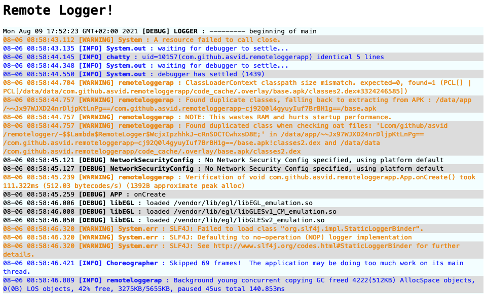

Szanuj Logcata
Podstawowe narzędzie programisty Android — Logcat. Jest tak powszechnie używane, zawsze pod ręką, że trudno sobie wyobrazić sytuację, gdy trzeba pracować bez niego. Mnie jednak udało się w takiej sytuacji znaleźć. I postanowiłem napisać i udostępnić narzędzie, które pomogło mi ten dramat przetrwać.
Wyzwanie
Dostałem zadanie przetestowania pewnej biblioteki w ramach naszego SDK. Z racji, że pracuję w #fintech to często dochodzi dodatkowy rygor bezpieczeństwa. Owa biblioteka nie pozwalała się zainicjalizować, jeśli:
- aplikacja była zbudowana w trybie
debug - została zainstalowana przez Android Studio, lub
adb install - nie została podpisana (to akurat wynika z instalowania aplikacji w wersji
release) - opcje deweloperskie były włączone
- została uruchomiona na urządzeniu lub wersji systemu spoza listy dopuszczonych
Brak opcji deweloperskich oznacza brak logów. Już samo zbudowanie aplikacji w wersji release ogranicza logi, ale przynajmniej wyjątki są logowane. Aplikacja wywalała się dość często, podejrzewałem jakieś standardowe NPE, bo np. zapomniałem czegoś zainicjalizować, zastubować itd. ale nie miałem pojęcia gdzie. Nie mogłem po prostu napisać testów ze względu na wymagania biblioteki ani jej zastubować, bo na tym polegało moje zadanie — na przetestowaniu jak się sprawdzi w możliwie “prawdziwym” środowisku.
Crashlytics lub inne narzędzie do zdalnego zbierania raportów crashy aplikacji, mogłoby w pewnym stopniu pomóc. Jednak raportowanie nie jest natychmiastowe, logowane są crashe aplikacji i jakieś metryki, a przydałoby mi się też logowanie zwykłych eventów.
Rozwiązanie
Gdyby tylko dało się wysyłać logi Logcata, np. przez websocket i potem łapać je na swoim komputerze… Nie znalazłem takiego narzędzia, więc je sobie napisałem.
Server
Potrzebowałem czegoś maksymalnie prostego, co pozwoliłoby postawić serwer WebSocket i wyświetlać logi w formie HTMLa, lub logować do pliku. Padło na ExpressJS z którym miałem trochę do czynienia hobbystycznie.
WebSocket
Postawienie serwera WS jest dość proste:
const ws = require('ws');
const wsServer = new ws.Server({ noServer: true});
wsServer.on('connection', socket => {
events.clear();
console.log("clearing events");
socket.on('message', message =>{
events.add(JSON.parse(message))
})
});
const server = app.listen(process.env.WS_PORT || '1234')
console.log("Remote Logger is starting on port: ", process.env.WS_PORT || '1234');
server.on('upgrade', (request, socket, head) =>{
wsServer.handleUpgrade(request, socket, head, socket =>{
wsServer.emit('connection', socket, request);
});
});
Serwer nasłuchuje eventów na porcie przekazanym podczas odpalenia aplikacji WS_PORT lub domyślnym 1234, nastepnie wrzuca je do obiektu listy events.
Web UI
Mając już logi zarejestrowane w obiekcie events, mogłem je wyświetlić jako HTML. Użyłem do tego szablonów pug. W kodzie aplikacji wystarczy:
app.set('view engine', 'pug')
app.get('/', function (req, res) {
res.render('index', { title: 'Remote Logger', message: 'Remote Logger!', data: events.toArray() })
})
A użyty szablon to:
html
head
title= title
style
include style.css
body
h1= message
ul
each event in data
li(class=event.level)!= event.time+' <b>['+event.level+'] '+event.tag+'</b> : ' + '<span style="white-space: pre-wrap">'+event.message+'</span>'
Czyli prosta lista zasilana elementami z obiektu events i podstawowymi kolorami na tekst w zależności od poziomu logów.
Same logi prezentują się tak: 
Extra
Nie mogłem sobie odpuścić dodania jakichś smaczków, więc po uruchomieniu serwera witają nas informacje o użytym porcie, IP do wpisania w kodzie aplikacji Android oraz nazwa narzędzia. Dodatkowo strona z logami otwiera się automatycznie.
❯ node index.js
Remote Logger is starting on port: 1234
Application started on port 3000 at IP: 192.168.1.87
██████╗ ███████╗███╗ ███╗ ██████╗ ████████╗███████╗
██╔══██╗██╔════╝████╗ ████║██╔═══██╗╚══██╔══╝██╔════╝
██████╔╝█████╗ ██╔████╔██║██║ ██║ ██║ █████╗
██╔══██╗██╔══╝ ██║╚██╔╝██║██║ ██║ ██║ ██╔══╝
██║ ██║███████╗██║ ╚═╝ ██║╚██████╔╝ ██║ ███████╗
╚═╝ ╚═╝╚══════╝╚═╝ ╚═╝ ╚═════╝ ╚═╝ ╚══════╝
██╗ ██████╗ ██████╗ ██████╗ ███████╗██████╗
██║ ██╔═══██╗██╔════╝ ██╔════╝ ██╔════╝██╔══██╗
██║ ██║ ██║██║ ███╗██║ ███╗█████╗ ██████╔╝
██║ ██║ ██║██║ ██║██║ ██║██╔══╝ ██╔══██╗
███████╗╚██████╔╝╚██████╔╝╚██████╔╝███████╗██║ ██║
╚══════╝ ╚═════╝ ╚═════╝ ╚═════╝ ╚══════╝╚═╝ ╚═╝
Android Lib
Inicjalizacja części androidowej narzędzia jest bardzo prosta, najlepiej zrobić to w metodzie onCreate() klasy dziedziczącej po Application:
class App : Application() {
override fun onCreate() {
super.onCreate()
RemoteLogger().initialize(
Config(
"192.168.1.87",
1234,
applicationContext.packageName
)
)
}
}
Inicjalizujemy bibliotekę i zapominamy o sprawie, logi lecą do naszego lokalnego serwera. To nie jest narzędzie, które zastąpi zdalne zbieranie crashy aplikacji albo samego Logcata. Chodzi tylko o rozwiązanie specyficznego problemu, gdzie aplikacja musi być uruchomiona w środowisku niepozwalającym na korzystanie z Logcata, ale nadal w fazie developmentu potrzebujemy dostępu do logów. Inicjalizacja loggera, jak i sama biblioteka nie powinna trafić do publicznie wydanej wersji aplikacji.
Użycie
- Pobierz repo
- Dodaj bibliotekę do projektu JitPack
- Odpal serwer w folderze /server
node index.js - Odpal swoją aplikację z dodaną biblioteką
- Odśwież stronę remote loggera
Biblioteka sama połączy się do serwera w momencie startu aplikacji, dlatego serwer musi być odpalony wcześniej. Na razie nie chciało mi się tego robić ładniej. To narzędzie jest przeznaczone dla programistów i do rozwiązania konkretnego problemu, a nie stosowania na co dzień w każdym projekcie :)
Wszystkie logi z Androida są zbierane od momentu startu aplikacji, jeszcze przed wywołaniem onCreate() w App. Zwykle pierwszym wpisem jest Fri Aug 06 08:58:54 GMT+02:00 2021 [DEBUG] LOGGER : --------- beginning of system. Logi są zbierane na jednym wątku a po połączeniu z serwerem WS są wysyłane na innym. Zbierane są logi wyłącznie dla pakietu aplikacji, dlatego trzeba go podać w metodzie initialize().
RemoteLogger przejmuje obsługę niewyłapanych wyjątków przez ustawienie Thread.setDefaultUncaughtExceptionHandler. Po wystąpieniu wyjątku, który wywala aplikację, jest on logowany na lokalnym serwerze, po czym aplikacja wyłącza się z kodem błędu 1. Nie miałem okazji sprawdzić, czy nie gryzie się to z Firebase Crashlytics, ale jeśli masz już to skonfigurowane, najprawdopodobniej nie potrzebujesz mojego narzędzia.
Nie chciej tego używać
Zdaję sobie sprawę, że to narzędzie jest raczej spartańskie… ale mi sporo pomogło, a więcej niż jedno popołudnie nie chciałem na nie poświęcać. I życzę Ci, żeby nigdy nie nastała potrzeba użycia go :) Szanuj Logcata.